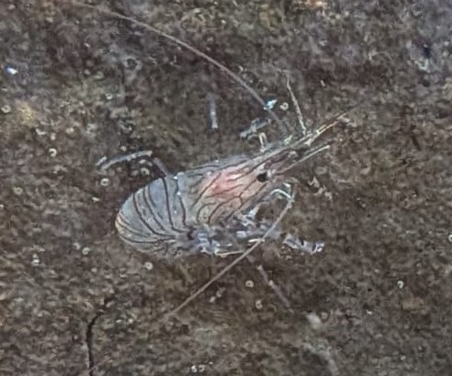

Bouquet commun
Palaemon serratus
Le bouquet commun est une crevette marine reconnaissable à son corps translucide marqué de lignes et de bandes sombres. Il vit principalement dans les eaux côtières peu profondes.
Informations scientifiques
| Nom scientifique | Palaemon serratus |
|---|---|
| Nom commun | Bouquet commun |
| Famille | Palaemonidae |
| Infra-ordre | Caridea |
| Ordre | Decapoda |
| Classe | Malacostraca |
| Habitat | Mares rocheuses, herbiers et zones côtières peu profondes |
| Répartition | Atlantique Est et Méditerranée |
| Longueur | Jusqu'à environ 10 cm |
| Alimentation | Petits invertébrés, algues et débris organiques |
Description
Le bouquet commun possède un corps allongé et translucide parcouru de
lignes et de motifs sombres. Ses longues antennes et son rostre
denticulé sont caractéristiques des crevettes du genre
Palaemon.
Il fréquente principalement les eaux côtières peu profondes, notamment
les mares rocheuses et les zones riches en végétation marine. Il peut
se déplacer rapidement lorsqu'il est dérangé.
Son régime alimentaire est varié et comprend de petits invertébrés,
des algues et différentes matières organiques.